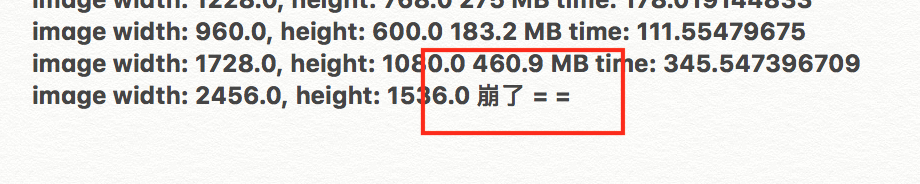

下面是关于崩溃的说明。
这个功能是相当吃内存的，所以如果要放大的图片太大的话 App 是会崩溃的。

所以为了不让 App 崩掉，同时也为了不让等待时间无限延长，我决定把放大的图片的长宽上限设定为 1200。
不过有一点很神奇，就是当图片太小的时候这模型也会崩。具体原因我感觉应该是 Input type 的锅：

好想换手机啊啊啊啊……
「无损放大」这个功能是我和 波诺先生 从最开始就想做的一个功能，当时我还觉得这个功能如果不开个通向 Waifu2x 服务器的 API 的话是完全没法做的，不过好在现在有了 Core ML 这个东西可以让我很简单地在本机实现这个功能。
虽然这个功能现在还比较鸡肋，运行时间和占用内存都是不理想的，但好歹还能用，而且放大效果还是不错的。
注意这只是 iPhone 6 上的测试效果